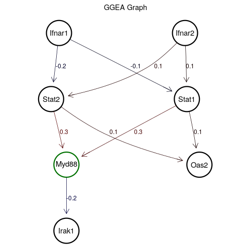

<MAP NAME="map_GO0060337_gview.png">
<AREA SHAPE="rect" COORDS="76.7876991478325,172.5008,126.806224527603,222.2024" HREF="http://www.ncbi.nlm.nih.gov/gene/20847" TITLE="Stat2: signal transducer and activator of transcription 2" TARGET="gene">
<AREA SHAPE="rect" COORDS="347.258243793998,172.5008,397.276769173768,222.2024" HREF="http://www.ncbi.nlm.nih.gov/gene/20846" TITLE="Stat1: signal transducer and activator of transcription 1" TARGET="gene">
<AREA SHAPE="rect" COORDS="107.354575768803,303.1976,157.373101148574,352.8992" HREF="http://www.ncbi.nlm.nih.gov/gene/17874" TITLE="Myd88: myeloid differentiation primary response gene 88" TARGET="gene">
<AREA SHAPE="rect" COORDS="92.534271952575,40.8836,142.552797332345,90.5852" HREF="http://www.ncbi.nlm.nih.gov/gene/15975" TITLE="Ifnar1: interferon (alpha and beta) receptor 1" TARGET="gene">
<AREA SHAPE="rect" COORDS="343.553167839941,40.8836,393.571693219711,90.5852" HREF="http://www.ncbi.nlm.nih.gov/gene/15976" TITLE="Ifnar2: interferon (alpha and beta) receptor 2" TARGET="gene">
<AREA SHAPE="rect" COORDS="107.354575768803,434.8148,157.373101148574,484.5164" HREF="http://www.ncbi.nlm.nih.gov/gene/16179" TITLE="Irak1: interleukin-1 receptor-associated kinase 1" TARGET="gene">
<AREA SHAPE="rect" COORDS="372.267506483883,303.1976,422.286031863653,352.8992" HREF="http://www.ncbi.nlm.nih.gov/gene/246728" TITLE="Oas2: 2'-5' oligoadenylate synthetase 2" TARGET="gene">
</MAP>
